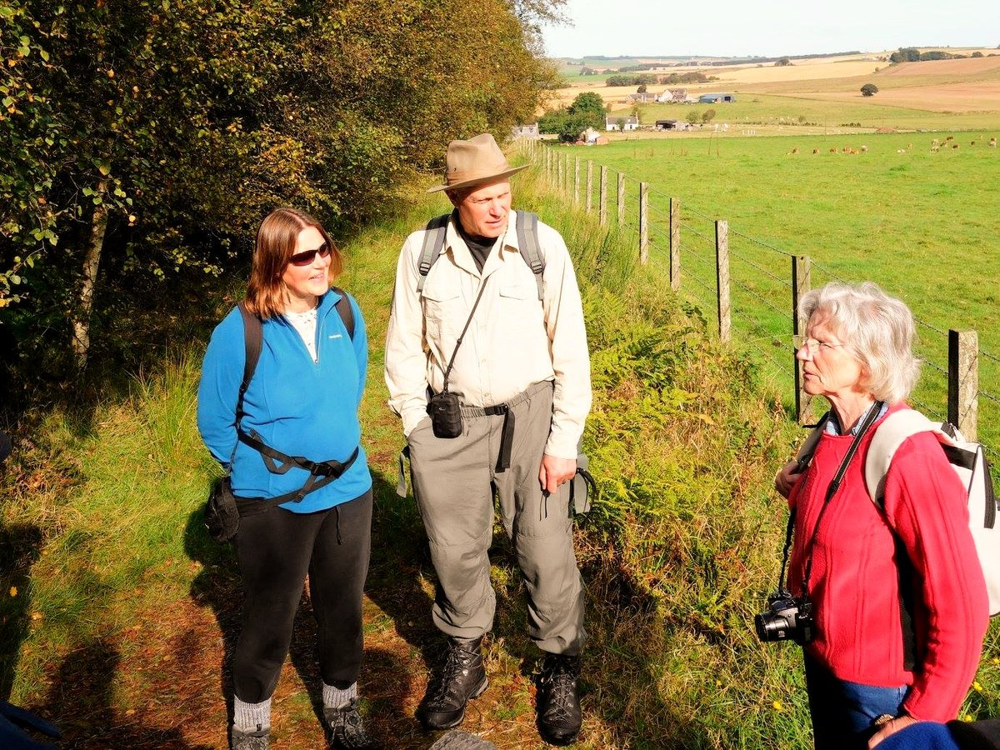
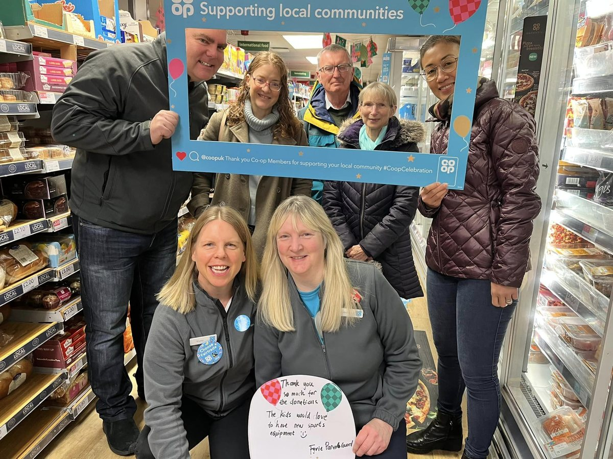

Take action now

This is one of the simplest ways to help out our cause. We believe the best way for our initiatives to be successful is for the community to actively get involved. Get in touch with any questions about how you can volunteer your time today.

The Trust always appreciates the generosity and involvement of people like you, with every contribution going towards making Woodhead and Windyhills Community Trust an even better organisation than it already is. Contact us with your questions about how to support us.